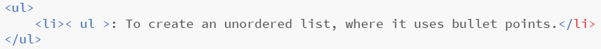

here you can see my progress of learning over the weeks
<----click here to see 2D raster and vector click here to see 3D printing---->
3 May 2020:
Today is all about CSS, CSS is something that allows your website to look better by adding some colour and design to it, being able to customise to your way.
To insert a css file into a HTML file, we type this command into the head:
Here is Jake Wright's video on learning about CSS:
27 April 2020:
Today we learn about more functions for HTML, the fuctions we learnt were:
- 
: To create an unordered list, where it uses bullet points.
: To create an ordered list, listing from 1 to the last listing.- < li >: To list something in ul or ol.
- < a href="" >< /a >: To reference a link or another HTML file.
- < table >: To create a table.
- < td >: To define the actual data.
- < tr >: To define a row for the table
24 April 2020:
Today is the start of our first lesson for website creating, we first watched a video by Jake Wright named: "learn html in 12 minutes" where he teaches the fundumentals of a website. Somethings we learnt were:
- : The start of a HTML website.
- : The header of the website.
- : To be placed in the head as the title of the website.
- : The body/contents of the website
- : Header for the website, x is the a number, as the number inceases, the header gets smaller, maximum amount of headers is 6.
- : To create a paragraph.
- : To insert an image sourced from your computer or browser (for browser you would need to type in another code), you can type in width="" and height="" to adjust the image size depending on the numbers you typed in.
- :To bold whatever is put inside.
- :To italicise whatever is put inside.
- :Used to inform a website visitor's browser that the document being rendered is an HTML document, it has to be added before < html >.
Here is the video on how to create a html website by Jake Wright: